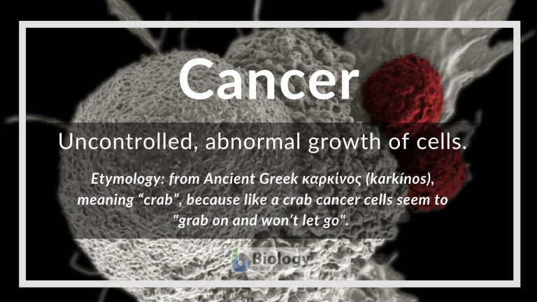

Cancer's Disease :

In biology,
Symptoms :
- Speak to a GP if you've had bloating for 3 weeks or more.
- your poo is loose, pale or looks greasy.
- a feeling of not having fully emptied your bowels after going to the toilet.
- diarrhoea or constipation for no obvious reason.
- tummy discomfort.

The type of changes to look out for include
Treatment :

There are many types of cancer treatment. The types of treatment that you receive will depend on the type of cancer you have and how advanced it is. Some people with cancer will have only one treatment. But most people have a combination of treatments, such as surgery with chemotherapy and radiation therapy. When you need treatment for cancer, you have a lot to learn and think about. It is normal to feel overwhelmed and confused. But, talking with your doctor and learning about the types of treatment you may have can help you feel more in control.
The most common types of cancer :
- Breast Cancer
- Lung cancer
- Prostate Cancer
- Colorectal Cancer
- Bronchus Cancer